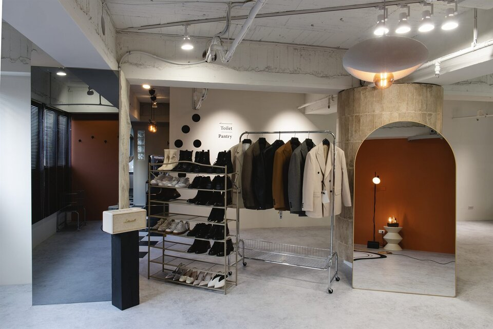

角色定位諮詢
一次深度訪談，釐清你現在被看見的樣子和想被看見的樣子差在哪裡。

À Voir·Define
Insight before image.
從你現在的位置出發，讓外在表達逐步與下一階段的職業角色對齊。
形象不能取代能力，但能讓能力更快被正確理解。
À Voir 是 CHUN.EN 的策略起點。從職業角色、個人氣質、身形比例、穿搭習慣與形象目標出發，建立一套長期可使用的個人視覺語言。若需要定位、服裝、妝髮與影像一次完成，可進入 商業視覺整合企劃。
一次深度訪談，釐清你現在被看見的樣子和想被看見的樣子差在哪裡。
在定位之上加入量身與色彩、身形比例觀察，讓你之後的每個穿著決定都有依據。
把現有的衣物變成有結構的選擇。留下、調整、補齊一次到位。
依你的角色、身形與實際使用場合尋找款式，把方向變成穿得到的衣服。
四項服務可以單獨委託，也可以依序進行，以下是完整路徑。
透過 LINE 或表單留言。諮詢團隊於工作日盡快回覆，安排面談時間與地點。
一次到場完成。角色定位諮詢是一場深度訪談；若選擇形象策略企劃，量身、色彩方向觀察與身形比例、服裝輪廓觀察會在同一場一起完成。
訪談的內容會收斂成一套你自己用得動的判斷依據：什麼場合該呈現什麼、配色往哪個方向走、哪些單品值得投資。
訪談結束後會提供風格建議報告，後續由顧問協助確認需求與採購。需要衣櫥健檢，或銜接 B.room 的妝髮造型與 C.photos 的形象照拍攝，也在這個階段接續安排。
範圍固定的服務直接標出價格；形象策略企劃與形象選品服務，依實際需求提案。